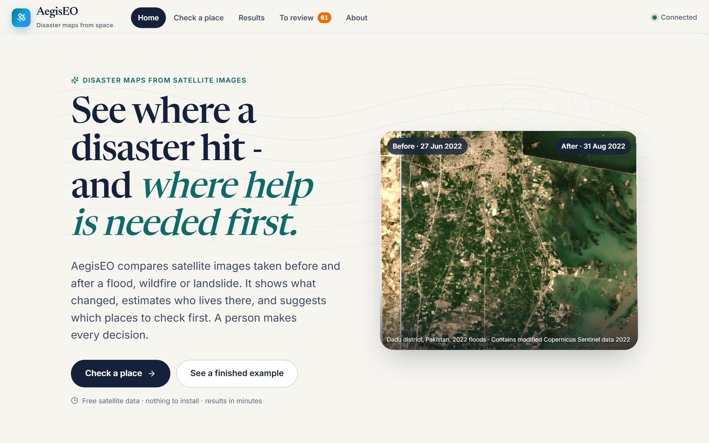

This report documents the AegisEO project completely: the problem, the system, its methods, its data, its implementation, its evaluation and its limitations. It is written so that a reader with no background in satellites or web development can follow it.
The chapters are ordered so that every idea is explained before anything that depends on it:
Technical terms are explained in the sentence where they first appear and are shown in this colour at that point. After that, they are used normally. There is no separate glossary: if a term is unfamiliar, the first place it appears explains it.
Coloured boxes mark three kinds of information:
A note on evidence: statements about behaviour were checked against the source code; numbers come from the project's own files (the trained-model evaluation, the database of completed checks) or from tests run while preparing this report in November 2026. Where something could not be verified, the text says so.
AegisEO is a web application that compares satellite images taken before and after a flood, wildfire or landslide, maps what changed, estimates who and what is in the changed area, ranks small squares of the area by how urgently they should be checked, and then hands every consequential decision to a person.
In the first days after a large flood, wildfire or landslide, the organisations that respond (government disaster agencies, the fire service, humanitarian organisations) all need answers to the same three questions: where did the land actually change, who and what is in those places, and where should we look first? Answering these questions from the ground is slow. Roads may be blocked, phone networks may be down, and the affected region can be larger than a city. People on the ground see only a small part of it.
Earth observation (EO) means collecting information about the Earth's surface from a distance, usually with instruments on satellites. Some satellites photograph or scan all of the world's land every few days, and the images of the European Union's Copernicus programme (explained in Chapter 3) are free for anyone to use. A satellite image is a grid of measurements of the ground, taken from orbit; Chapter 3 explains exactly what such an image contains.
Free images alone do not solve the problem. Turning them into a reliable map of a flood usually needs a specialist who knows where to find suitable images, how to deal with clouds, how to separate new flooding from rivers that are always there, and how to judge whether the result can be trusted. That takes hours or days, and it is easy to make mistakes that look convincing on a map.
Three technical difficulties make the work hard:
AegisEO automates the routine part of this work and makes its reasoning visible. A person chooses a place (a past disaster, a current alert, or any area on a map), the kind of disaster and the date. AegisEO then:
The software is organised as an agent: a program that is given a goal, makes a plan, carries the plan out by calling a fixed set of tools (for example "search the image archive" or "count people in the area"), checks the results of each step, and changes course when something goes wrong, while recording every decision. In AegisEO the agent's choices are made by written rules, not by an AI language model, so the same inputs always produce the same decisions and every decision can be traced. Chapter 9 explains this design.
Finally, AegisEO is built around human-in-the-loop (HITL) operation: the software prepares, and a person decides. Doubtful findings wait for a person to double-check them, and draft warnings wait for a person to approve or reject them. Chapter 6 explains this process in detail.

The objectives below describe what the delivered system actually does. Chapter 14 reports how each was tested.
| # | Objective | How it is met in the delivered system |
|---|---|---|
| O1 | Detect change from two kinds of satellite image | Floods: a neural network that combines radar and optical images, developed with the 446 expert-labelled images of Sen1Floods11 (252 for training, 89 for choosing the model, 105 kept aside for the final test). Wildfires: the standard dNBR burn index. Landslides: a combination of vegetation loss, radar change and slope. |
| O2 | Work when clouds hide the ground | The flood model learned to rely on radar where optical pixels are cloudy; measured accuracy with no optical image at all is 65% overlap with expert maps, against 42% for an optical-only model under 50% cloud. |
| O3 | State how confident each result is | Calibrated probabilities, a per-pixel uncertainty map, an independent cross-check and an overall confidence level (High, Medium, Low). |
| O4 | Estimate exposure | Population grids (Meta/CIESIN HRSL, WorldPop), hospitals, schools, emergency services, settlements and roads (OpenStreetMap), and land cover (ESA WorldCover). |
| O5 | Rank where to look first, with reasons | A documented score for every priority square, written reasons, a life-safety rule and a sensitivity test of the weights. |
| O6 | Keep a person in charge | 18 safety checks, a review queue, approval of every warning by a named person, priority changes with reasons, an audit log, and memory of corrections for later checks. |
| O7 | Be usable by non-specialists | A four-step guided wizard, plain-language results, technical detail behind expandable sections. |
| O8 | Be honest and reliable | Every run ends with a truthful status; missing data is reported rather than invented; failures of external services are handled; practice data is always labelled as made up. |
AegisEO was built as a B.Tech project inspired by the multi-sensor Earth-observation problems that companies such as GalaxEye Space work on. It uses only public data and assumes no private data. The repository contains the complete source code, the trained model files, automated tests and technical documents (in the docs folder), on which this guide builds.